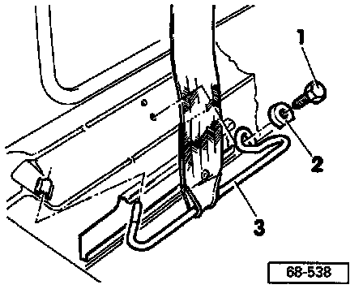
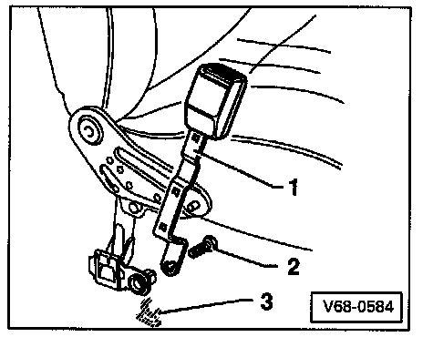

2 Door
WARNING: ALWAYS follow the prescribed work sequence for removing or installing belt reel.
1 - Belt height adjustment fitting
- Removing Belt Height Adjustment
2 - Cap
- Snapped on
3 - Belt relay (upper anchor loop)
4 - Belt guide
- Secured with two Phillips-head screws - Torque to: 1.5 Nm (13 in lb)
5 - Belt reel
- Remove trim at top and bottom of B-pillar, and sill panel trim
- Retaining lugs determine mounting position
- Tightening torque (hex bolt): 40 Nm (30 ft lb)
6 - Front anchor
- Removing: See procedure below.
7 - Tensioning unit
- Integral part of seat belt
- Loosening locking nut -9- makes tensioner inactive, tightening it will make tensioner operational again
8 - Bracket
9 - Locking nut
- Integral part of tensioning unit
10 - Front belt buckle (latch)
- Removing: See procedure below.
Removing Front Anchor:

1 - Hex bolt
- Tightening torque; 40 Nm (30 ft lb)
2 - Cap
3 - Guide rail
Removing And Installing Belt Buckle:

1 - Belt buckle
2 - Hex bolt
- Tightening torque: 40 Nm (30 ft lb)
3 - Clip (slide)